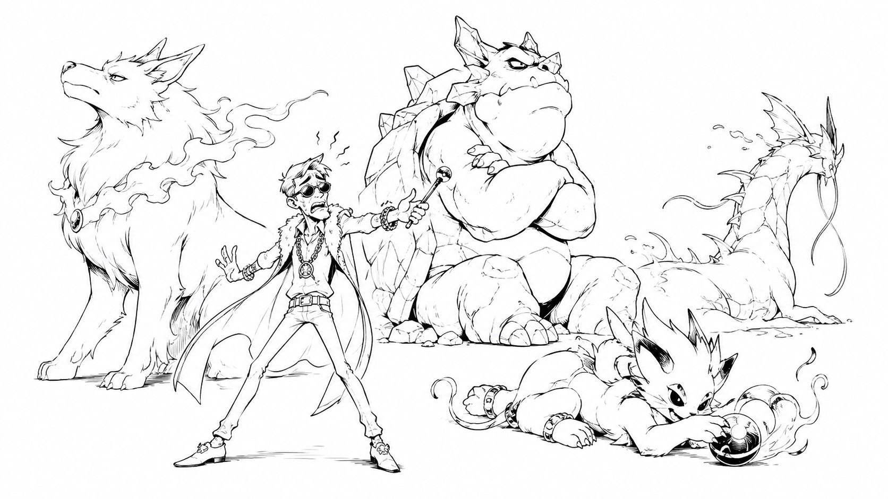

強いポケモンを集める前に、トレーナーを育ててください。

どーも、とーるです！
いやーー、気づけば、このコラムも100本目になりました。
100本も書いてきたので、今日は少しだけ裏話をしようと思います。
僕は相談やサポートをしていると、よくこんなことを聞かれます。
「なんで、そんな先のことが分かるんですか？」
たとえば、
「大量無料特典が来年までに終わります（その当時）」
「これから電子書籍を活用する人が増えますよ」
「今後は、いきなり高額商品を売るよりフロント商品が重要になりますよ」
「コミュニティ化が進みますよ」
「診断を入口にしたファネルが増えますよ」
こういう話をすると、「予知能力でもあるんですか？」みたいに言われることがあります。
いや、ありません（笑）
未来が見えるなら、たぶん僕は毎日ゲームをする前に競馬と株をやっています。
それでも、僕が話したことがあとから現実になるケースはそれなりにあります。
理由はすごく単純です。
原理原則から考えれば、ある程度は分かるからです。
今日は、100本目なのでその話をします。
みんな、いきなりレベル50の技を覚えようとする
最近、SNSを見ていると不思議に思うことがあります。
まだビジネスを始めたばかりなのに、いきなりレベル40や50くらいのノウハウを勉強している人がすごく多いんです。
たとえば、
- 最新AI活用術
- Instagramの最新アルゴリズム
- 爆伸びするリール構成
- 成約率が上がるプロンプト
- 最新の自動化ツール
- 売れるテンプレート
もちろん、これらが悪いわけじゃないです。
僕も新しいツールは触りますし、AIも使います。
でも、その前に身につけることがあるんです。
ゲームで考えてみてください。まだレベル5なのに、いきなり最強武器だけ渡される。
ドラクエならロトの剣。
FFならアルテマ。
ポケモンなら伝説のポケモン。
めちゃくちゃ強そうですよね。
でも、本人はレベル5です。使いこなせません。
強そうな武器を持っています。けど、腕も細いし、振り回す体力もありません。
ポケモンなんて、バッジが足りなければ言うことを聞いてくれません。戦闘中に寝たり、勝手に違う技を使ったりします。
SNSでも、これと同じことが起きています。
強いポケモンは持っている。でも、トレーナーが育っていない。
だから、最新テクニックを教わっても、なぜそれを使うのかが分からない。少し環境が変わるだけで使えなくなる。
アルゴリズムが変わるたびに、また新しいノウハウを探す。AIの仕様が変われば、また別のプロンプトを買う。
そして半年後には、「結局、何を信じればいいんでしょう……」となります。
強いポケモンを集め続けるより、まずはトレーナーである自分を育てた方が早いんです。
僕が相談で話すのは、もっと手前のこと
僕は相談やアドバイスをする際、相手より一つ上のレベルの最新テクニックを教えることは、ほとんどありません。
もちろん、必要なら話します。
でも、相談の大半で問題になっているのは、もっと手前です。
たとえば、
- ファネル
- KSF
- 規範反発
- チャンク
- 行動経済学
- 商品設計
- ポジショニング
こういった話をします。
すると、「え？そこからなんですか？」と言われることがあります。
はい、そこからです（笑）
なぜなら、そこが土台だからです。
家を建てるとき、最初に壁紙を選びませんよね。まず地盤を調べて、基礎工事をして、柱を立てます。
でもSNSビジネスでは、多くの人が基礎工事をせずに、
「今はこの壁紙が流行っています！」
「この照明をつけるとおしゃれです！」
「最新のキッチンを入れましょう！」
という話ばかりしています。
いや、家がないんです（笑）
壁紙だけ持っていても住めません。
僕がこの100本で話してきたことは、ほとんどが基礎工事です。
派手ではありません。「これを使えば明日100万円！」とも言えません。
でも、一度身につければ、舞台が変わっても使えます。
原理原則は、舞台が変わっても残る
Instagramがなくなっても、ファネルの考え方は残ります。
新しいSNSが出てきても、ポジショニングは必要です。
AIが文章も画像も動画も作るようになっても、商品設計は必要です。
ツールが変わっても、KSFを見極めなければ成果にはつながりません。
そして、AIがどれだけ普及しても、人間の購買心理まで突然別物になるわけではありません。
人は今後も比較します。
損をしたくないと思います。
限定に弱いです。
みんなが選んでいるものを選びたくなります。
手に入りにくいものに価値を感じます。
無料よりも、一度お金を払ったものを大事にします。
新しい感情が生まれたように見えても、調べてみると大抵、「ああ、それは昔からある〇〇で説明できるね」となります。
だから僕は、AIを勉強する前に人間を勉強した方がいいと思っています。
AIは毎月変わります。人間は、そこまで早くアップデートされません（笑）
100本のコラムは、全部別の話に見える
ここまで僕は、
ファネルの話をしました。
KSFの話をしました。
規範反発の話をしました。
チャンクの話をしました。
行動経済学、商品設計、ポジショニングについても書きました。
一見すると、全部別の知識に見えると思います。
でも、実はすべてつながっています。
たとえば、商品を作るには商品設計が必要です。でも、良い商品を作っただけでは売れません。
誰に、どの立場から届けるのか。そこでポジショニングが必要になります。
ポジショニングを考えるときは、どのくらい広い概念で自分を見せるのか。そこでチャンクの考え方が必要になります。
立ち位置と商品が決まったら、どうやって相手に知ってもらい、興味を持ってもらい、購入までつなげるのか。そこでファネルが必要になります。
でも、ファネルを作っても、人がこちらの思いどおりに動くとは限りません。
なぜ人は止まるのか。
なぜ人は迷うのか。
なぜ「欲しい」と言いながら買わないのか。
そこで行動経済学がつながります。
さらに、SNSという社会規範の強い場所で、いきなり市場規範である販売を持ち込むと反発が起きます。これが規範反発です。
そして、その中で成果に最も影響する要因は何なのか。今やるべきタスクは投稿なのか、商品作りなのか、導線改善なのか。それを見極めるのがKSFです。
全部、別の話ではありません。
一本の木なんです。
商品設計やポジショニング、ファネルは枝として分かれて見えるかもしれません。でも、根っこでは同じ原理原則につながっています。
僕は100本のコラムで、枝葉をバラバラに紹介していたわけではありません。ずっと、同じ幹の周りを歩きながら話していたんです。
僕は未来を予知しているわけではない
電子書籍が流行る。
フロント商品が見直される。
コミュニティが増える。
診断型の入口が増える。
これらは、未来を見て当てたわけではありません。原理原則に当てはめて考えただけです。
たとえば、SNSで高額商品をいきなり販売する人が増えれば、見込み客は警戒します。
警戒する人が増えれば、まず低価格の商品で試したいという需要が増えます。するとフロント商品が必要になります。
フロント商品が増えれば、単発で売るだけではなく、その後の商品につなげるファネルが必要になります。
商品を買った人との関係を深めようとすれば、コミュニティや継続サービスが増えます。
発信者が増え、選択肢が多くなれば、見込み客は「自分にはどれが合うのか」が分からなくなります。すると診断型の入口が増えます。
特別な予知ではありません。一つずつロジックをつなげれば、「ああ、次はこうなるよね」と分かるだけなんです。
僕は未来を予測しているんじゃありません。
原理原則から、未来を逆算しているだけです。
土台を知っているから「てことはこうなりそう」がわかるんです。
これが「ちょっと考えればわかる」の正体です。
最新テクニックを追うことが悪いわけではない
誤解しないでほしいのですが、新しいものを学ぶなという話ではありません。
新しいツールは便利です。AIによって、これまで何時間もかかっていた作業が数分で終わることもあります。
SNSの新機能を使えば、今まで届かなかった人に届くかもしれません。
ただし、それらは土台の上に乗せるものです。
ファネルがないままAIで投稿を量産しても、投稿が増えるだけです。
ポジショニングが曖昧なまま発信を増やせば、「この人、結局何の人なんだろう？」という疑問が大量生産されます。
商品設計がズレたまま広告を出せば、ズレた商品が多くの人に知られます。最新技術によって、失敗する速度まで上がります（笑）
だからこそ、先に土台が必要なんです。
基礎がある人は、最新テクニックを見たときに、
「これはファネルのこの部分に使えるな」
「これは現在バイアスを利用した設計だな」
「このサービスが流行るのは、規範反発が起きているからだな」
と、自分で考えられます。
テクニックを暗記するのではなく、その正体が分かるようになるんです。
それが、本当の意味で自分の力になった状態だと思います。
変わるものより、変わらないものを先に学ぶ
最新テクニックは、数か月で使えなくなることがあります。SNSの攻略法も、1年後には通用しないかもしれません。
でも、原理原則はそんなに簡単には変わりません。
だから僕は、見えない新しいものを必死に探すより、昔から変わらないものを先に身につけてほしいと思っています。
土台があれば、何が流行っても応用できます。土台がなければ、流行が終わるたびにゼロからやり直しです。
プロフィールを変える。
肩書きを変える。
商品を変える。
アカウントまで変える。
そして数か月後、また新しい「今これが稼げる」に乗り換える。
何度転生しても、基礎ステータスが上がっていなければ同じです（笑）
強いポケモンを捕まえることより、強いトレーナーになること。
僕が100本のコラムで伝えてきたのは、結局これです。
最新テクニックに疲れた方へ
もし今、
「最新ノウハウについていけない」
「毎月違うことを言われて、もうウンザリしている」
「何を信じればいいのか分からない」
「勉強しているのに、自分で判断できるようにならない」
そんな状態なら、一度、新しい情報を追いかけるのを止めてみてください。
そして、何年経っても変わらない土台から学んでみてください。
僕のアプリでは、こんな土台のオンデマンドコースが何本もあります。
目移りするような「2026年最新アルゴリズム攻略！これで誰でも月100万円！」みたいな、だったらみんなやっとるわ、というようなものではなく、こうした基礎内容を、別々の知識ではなく、一本の線として学べるようにしています。
流行のテクニックを集めた場所ではありません。今日使って、来月捨てるノウハウを置く部屋でもありません。
舞台が変わっても使い続けられる、考え方の土台を作る部屋です。
外では毎日のように、
「新しいAIが出ました！」
「アルゴリズムが変わりました！」
「今はこの方法です！」
と騒がれています。
それを見て、「もうついていけない……」と思った方は、ぜひ僕の部屋に遊びに来てください。
最新情報を追いかけ続けなくても、自分で考えられるようになる。新しいテクニックを見たときに、その正体を自分で見抜けるようになる。
この100本のコラムで話してきたことが、きっと一本の線としてつながるはずです。
100本目まで読んでいただき、本当にありがとうございました。
これからも僕は、変わり続ける枝葉より、何年経っても揺るがない幹の話をしていきます。
なんつて！
とーる｜行動経済アナリスト